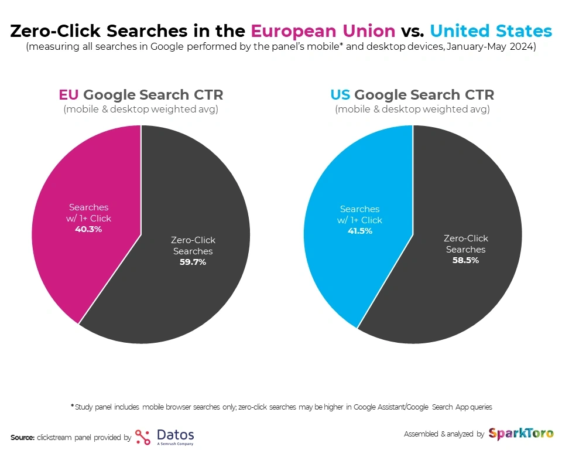
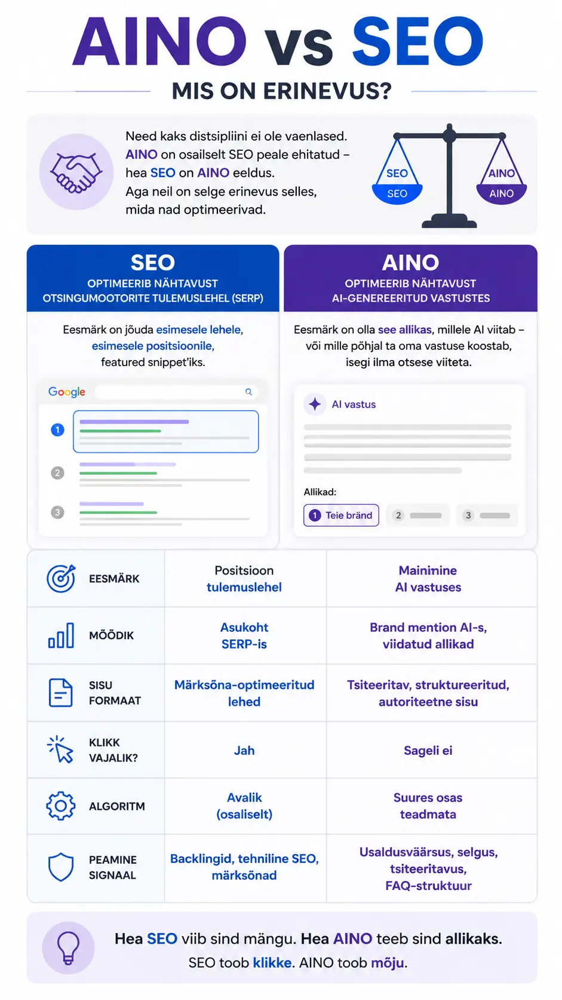
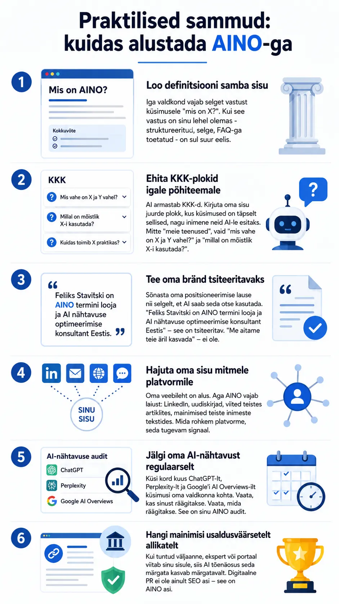

Definitsioon
AINO (lühend: AI Nähtavuse Optimeerimine) on digitaalse turunduse distsipliin, mille eesmärk on tagada, et ettevõtte bränd, tooted, teenused ja sisu ilmuksid nähtavalt tehisintellekti-põhiste otsingumootorite ja vestlusrobotite vastustes - sealhulgas ChatGPT-s, Perplexity's, Google AI Overviews-is, Google otsingus, Claude'is ja teistes LLM-põhistes platvormides.
Lihtsamalt öeldes: kui inimene küsib AI-lt midagi, mis puudutab sinu valdkonda, siis AINO tagab, et AI räägib sinust - mitte sinu konkurendist.
AINO ei asenda SEO-d. See on SEO loogiline jätk maailmas, kus otsingu tulemuste lehe (SERP) asemel loeb otsingu vastuse sisu.
Kust see termin tuli?
AINO termini võtsin kasutusele mina - Feliks Stavitski - 2026. aastal, kui sai selgeks, et ingliskeelne GEO (Generative Engine Optimization) ei kirjeldanud eesti keeles täpselt seda, millist tegevust antud protsess kirjeldab.
GEO räägib generatiivsetest mootoritest üldiselt. AEO (Answer Engine Optimization) räägib vastustest. SGE (Search Generative Experience) oli Google'i ajutine termin oma AI Overviews-i funktsionaalsuse jaoks. Kõik need on kattuvad, ja need on kõik õiged - aga ükski ei kirjeldanud seda tervikut, mida Eesti ettevõtja tegelikult vajab mõistmiseks: kuidas mind AI silmis nähtavaks teha?
AINO on eestikeelne termin eestikeelsele turule. See ei ole tõlge - see on kontseptuaalne valik: AI Nähtavuse Optimeerimine ütleb täpselt, mida ta tähendab.
Miks see just praegu oluline on?
Veel kolm aastat tagasi oli otsinguturunduse loogika täiesti selge: Google indekseerib, kasutaja googeldab, klikib lingile, jõuab sinu lehele. Kliendi teekond, klikist kliendini, algas otsingumootorist.
Täna on see loogika mõranemas. Pigem juba mõranenud, sest muutused on nii kiired.
ChatGPT igakuine kasutajate arv ületas juba 2024. aastal 200 miljoni piiri. Perplexity kasvab viiendiku võrra aastas. Google'i enda AI Overviews ilmub peagi kõigi informatsiooniliste päringute puhul - ja see tähendab, et kasutaja saab vastuse ilma, et ta ühelegi lingile klikiks.
Seda nimetatakse zero-click otsinguks. Ja see on juba reaalsus, mitte tulevikuprognoos.

Ettevõtted, keda AI ei maini, muutuvad järk-järgult nähtamatuks - mitte sellepärast, et nad on halvad, vaid sellepärast, et AI ei leia neist midagi tsiteeritavat.
AINO vs SEO - mis on erinevus?
Need kaks distsipliini ei ole vaenlased. AINO on osaliselt SEO peale ehitatud - hea SEO on AINO eeldus. Aga neil on selge erinevus selles, mida nad optimeerivad.
SEO optimeerib nähtavust otsingumootorite tulemuslehel (SERP). Eesmärk on jõuda esimesele lehele, esimesele positsioonile, featured snippet'iks.
AINO optimeerib nähtavust AI-genereeritud vastustes. Eesmärk on olla see allikas, millele AI viitab - või mille põhjal ta oma vastuse koostab, isegi ilma otsese viiteta.
| Kriteerium | SEO | AINO |
|---|---|---|
| Eesmärk | Positsioon tulemuslehel | Mainimine AI vastuses |
| Mõõdik | Asukoht SERP-is | Brand mention AI-s, viidatud allikad |
| Sisu formaat | Märksõna-optimeeritud lehed | Tsiteeritav, struktureeritud, autoriteetne sisu |
| Klikk vajalik? | Jah | Sageli ei |
| Algoritm | Avalik (osaliselt) | Suures osas teadmata |
| Peamine signaal | Backlingid, tehniline SEO, märksõnad | Usaldusväärsus, selgus, tsiteeritavus, FAQ-struktuur |

Segadust tekitavad terminid - mis on mis?
Valdkonnas on praegu palju termineid ringluses ja need kattuvad osaliselt. Siin on selgitus, kuidas need erinevad:
- GEO - Generative Engine Optimization: Ingliskeelne termin, mis hõlmab kõike, mis puudutab optimeerimist generatiivsete AI-mootorite jaoks. AINO on GEO eestikeelne, täpsustatud versioon.
- AEO - Answer Engine Optimization: Rõhutab vastusemootorite aspekti - ehk et inimesed kasutavad AI-d nagu vastusemasinat, mitte otsingumootorit. AEO on AINO alam ehk üks vaatenurk samast probleemist.
- SGE - Search Generative Experience: Google'i enda termin AI Overviews'i kohta. See on konkreetse platvormi funktsioon, mitte üldine distsipliin.
- LLM SEO / AI SEO: Mitteametlikud terminid, mida kasutatakse blogides ja turundusartiklites. Kirjeldavad sama asja, mida AINO - aga vähem täpselt.
Kokkuvõte: AINO on eestikeelne kontseptuaalne raamistik sellele, mida inglise keeles nimetatakse peamiselt GEO-ks ja AEO-ks.
Kuidas AI otsustab, mida tsiteerida?
See on küsimus, mida küsitakse kõige sagedamini - ja millele pole ühte lihtsat vastust, sest AI mudelite täpsed algoritmid ei ole avalikud. Aga mõned mustrid on selgeks saanud.
AI eelistab sisu, mis on:
- Selge ja struktureeritud: FAQ-plokid, definitsioonid, loendid - need on formaadid, millest AI saab hõlpsalt tsiteeritavaid fragmente võtta. Jooksev proosa on raskem töödelda.
- Autoriteetne: AI hindab allikaid, millel on usaldusväärsus: viiteid, eksperdihäält, asjaolu, et sarnast infot esineb mitmes kohas. Üksik tekst on nähtamatu.
- Konkreetne: Ebamäärased üldistused ei jää AI teadmiste baasi. Konkreetsed definitsioonid, numbrid, näited - need jäävad.
- Tsiteeritav: Lause, mille saab otse vastusesse panna, ilma et see kontekstist välja rebitud kõlaks - see on kulda väärt.
- Mitmekordne: Kui sinu sisu ilmub paljudel platvormidel (oma blogi, LinkedIn, uudiskiri, teised veebilehed), siis AI näeb seda signaale andva mustrina.
Praktilised sammud: kuidas alustada AINO-ga
1. Loo definitsiooni samba sisu
Iga valdkond vajab selget vastust küsimusele "mis on X?". Kui see vastus on sinu lehel olemas - struktureeritud, selge, FAQ-ga toetatud - on sul suur eelis.
2. Ehita KKK-plokid igale põhiteemale
AI armastab KKK-d. Kirjuta oma sisu juurde plokk, kus küsimused on täpselt such, nagu inimene neid AI-le esitaks. Mitte "meie teenused", vaid "mis vahe on X ja Y vahel?" ja "millal on mõistlik X-i kasutada?".
3. Tee oma bränd tsiteeritavaks
Sõnasta oma positsioneerimise lause nii selgelt, et AI saab seda otse kasutada. "Feliks Stavitski on AINO termini looja ja AI nähtavuse optimeerimise konsultant Eestis" - see on tsiteeritav. "Me aitame teie äril kasvada" - ei ole.
4. Hajuta oma sisu mitmele platvormile
Oma veebileht on alus. Aga AINO vajab laiust: LinkedIn, uudiskirjad, viited teistes artiklites, mainimised teiste inimeste tekstides. Mida rohkem platvorme, seda tugevam signaal.
5. Jälgi oma AI-nähtavust regulaarselt
Küsi kord kuus ChatGPT-lt, Perplexity-lt ja Google'i AI Overviews-ilt küsimusi oma valdkonna kohta. Vaata, kas sinust räägitakse. Vaata, mida räägitakse. See on sinu AINO audit.
6. Hangi mainimisi usaldusväärsetelt allikatelt
Kui tuntud väljaanne, ekspert või portaal viitab sinu sisule, siis AI tõenäosus seda märgata kasvab märgatavalt. Digitaalne PR ei ole ainult SEO asi - see on AINO asi.

Korduma kippuvad küsimused (FAQ)
Mis on AINO?
AINO ehk AI Nähtavuse Optimeerimine on digitaalse turunduse distsipliin, mille eesmärk on muuta ettevõte nähtavaks tehisintellekti-põhiste platvormide - nagu ChatGPT, Perplexity, Google AI Overviews ja Claude - genereeritud vastustes.
Kes lõi termini AINO?
Termini AINO võttis kasutusele Feliks Stavitski 2026. aastal, et kirjeldada AI nähtavuse optimeerimist eestikeelses turunduskontekstis. Ingliskeelne vaste on GEO (Generative Engine Optimization).
Mis vahe on AINO-l ja SEO-l?
SEO optimeerib nähtavust otsingumootorite tulemuslehel. AINO optimeerib nähtavust AI-genereeritud vastustes. Mõlemad on olulised, aga nende loogika, mõõdikud ja meetodid erinevad.
Kas AINO asendab SEO-d?
Ei. AINO täiendab SEO-d. Tugev SEO alus - tehniline korrektsus, autoriteet, kvaliteetne sisu - on AINO eeldus. Aga AINO nõuab lisaks spetsiifilisi sisu- ja struktuurseid valikuid, mida klassikaline SEO ei kata.
Mis on GEO ja kuidas see erineb AINO-st?
GEO (Generative Engine Optimization) on ingliskeelne katustermin AI-põhiste mootorite optimeerimiseks. AINO on selle eestikeelne, kontseptuaalselt täpsustatud versioon Eesti turu jaoks. Sisuliselt kirjeldavad nad sama distsipliini.
Mis on AEO?
AEO ehk Answer Engine Optimization rõhutab AI kasutamist vastusemootorina. See on AINO alamhulk - üks vaatenurk samale probleemile, fookusega sellel, et AI kasutajad otsivad otseseid vastuseid, mitte linke.
Kas AINO töötab ka eestikeelse sisu puhul?
Jah, aga eestikeelses otsinguruumis on oluline arvestada, et suured AI-mudelid on treenitud valdavalt ingliskeelsetel andmetel. Eestikeelse sisu nähtavus AI-s nõuab lisapingutust: kvaliteetne sisu, mitmekanalilisus, mainimised ingliskeelsetel platvormidel aitavad suurendada tõenäosust, et AI su brändiga kokku puutub.
Kuidas mõõta AINO edukust?
Peamised mõõdikud on: brändi mainimiste sagedus AI vastustes, viidatud allikaks olemine, otsene liiklus AI-platvormidelt ja see, milliseid väiteid AI sinu brändi kohta teeb. Valdkonna standardiseeritud mõõdikud on alles välja kujunemas.
Kui kaua läheb, enne kui AINO tulemusi annab?
Sarnaselt SEO-le pole AINO kiirturundus. Arvestada võib 3–6 kuuga, enne kui struktureeritud sisust tulevad selgelt mõõdetavad tulemused AI nähtavuses. Mõned sammud - nagu brändi definitsioon ja KKK-plokid - võivad anda tulemusi kiiremini.
Kas väike ettevõte saab ka AINO-ga midagi saavutada?
Jah. AINO on skaleeruv. Väike ettevõte võib alustada kolmest asjast: selge definitsioon oma lehel, KKK-plokk põhiteemade juurde ja regulaarne sisu avaldamine. See on rohkem aja kui raha küsimus.
Kokkuvõte
AINO ei osutu moeröögatuseks ega järjekordseks turundusterminiks, mis aasta pärast unustusse vajub. See on vastus reaalsele nihkele selles, kuidas inimesed infot otsivad ja leiavad.
Kui sinu bränd ei ole AI vastustes esindatud, siis AI silmis ei ole sind olemas.
See on sõge olukord sellise väiksema turu jaoks nagu Eesti oma. Aga see on ka võimalus: paljud ei tea veel, et probleem olemas on. Kes esimesena mängu astub, võidab märgatava eelise.
AINO algab selgusest. Sellest, et su enda veebileht annab teada, kes sa oled, mida sa teed ja miks see oluline on - ning ütleb seda nii selgelt, et masin saab seda inimesele edasi rääkida.
Feliks Stavitski on digitaalturunduse konsultant ja AINO termini looja. Ta kirjutab AI nähtavuse optimeerimisest, turundusest ja Eesti e-kaubandusest.